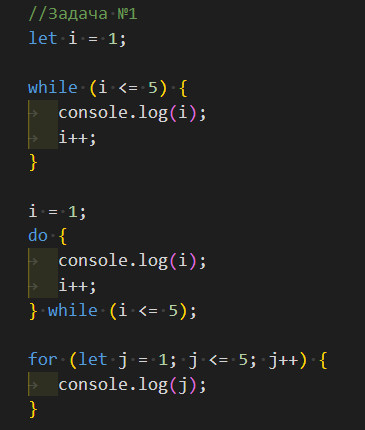
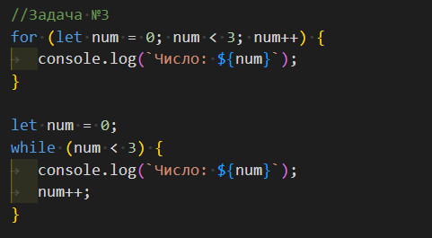
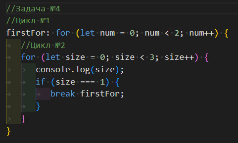
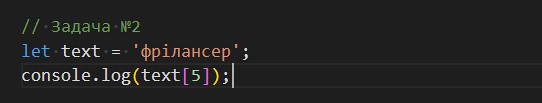
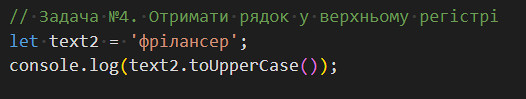
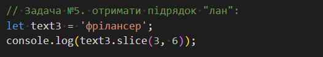

Домашнє завдання до уроку #23
Відео "Оператори JAVASCRIPT"
- Варіант №1: не вірно, оператор "-" перетворює рядок в число -22, а при
додаванні рядка "35" і числа -22 знову отримуємо рядок "35-22");
- Варіант №2: вірно;
- Варіант №3: не вірно - інкремент не може застосовуватись до числа;
- Варіант №4: не вірно - постфіксний запис, спочатку виведеться в консоль 0;
- Варіант №5: не вірно - повертається 11, спочатку виконуються оператори &&,
результат першого 11, другого !'', потім виконується оператор ||, так як перше значення істина, то
він ігнорує значення другого виразу і повертає значення першого;
- Варіант №6: так як змінна не null і не undefined, то виведеться значення
змінної 0.
Відео "IF ELSE в JAVASCRIPT"
- Варіант №1: хиба, так як використовується строге порівняння, а типи даних
різні;
- Варіант №2: істина, так як при нестрогому порівнянні дані приводяться до чисел,
а в цьому випадку числа рівні;
- Варіант №3: істина, спочатку виконуються порівняння, так як у них вищий
пріоритет, ніж у &&, з обох сторін - true, після цього оператор && повертає останнє true;
- Варіант №5: істина, 0 - це false, переходимо до else if, там не порожній рядок
з пробілом - це true, а значить виводиться в консоль 'Істина'.
Відео "Цикли FOR і WHILE в JAVASCRIPT"
- Задача №1:

- Задача №2: не вірно, останній результат 1, так як при 0(false) цикл вже не буде
виконуватись;
- Задача №3:

- Задача №4:

Відео "Числа в JAVASCRIPT"
Відео "Рядки в JAVASCRIPT"
- Задача №1: не вірно, томущо використані не правильні лапки, для шаблонного
рядка потрібно використовувати зворотні лапки (` `);
- Задача №2:

- Задача №3: не вірно, отримаємо 123456, так як оператор додавання не змінює тип
даних рядок на число;
- Задача №4:

- Задача №5:

- Задача №6: false, тому що пошук почнеться з символа з індексом 4, а це вже
буква "а", тому співпадіння не буде знайдено.